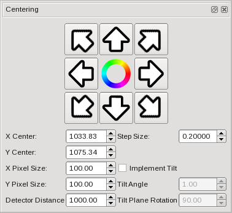
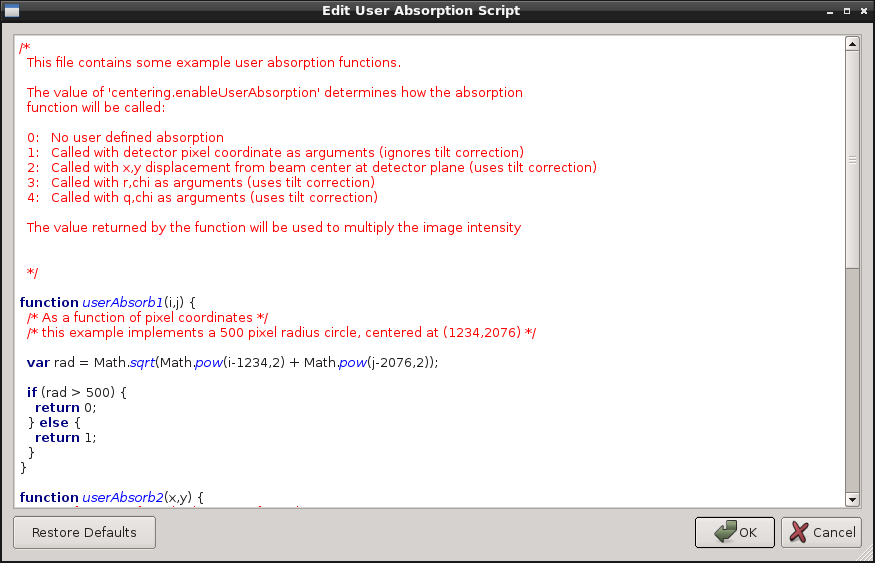

From QXRD 0.9.9 onwards a facility is provided for user-defined functions to be specified in the circular integration routine. This might be used to implement a custom sample absorption correction, for example. The functions are written in the ECMAscript language used by the qxrd scripting system.
Two different user supplied functions are supported - a 'geometry' function which supplies the mapping between detector pixels and integration 'radius', and an 'absorption' function which provides a custom intensity normalization function. A custom geometry function replaces the normal qxrd radius calculation routine, while a custom absorption function applies an additional multiplicative absorption after the standard absorption corrections have been applied.
|  |
|
The 'Centering' Dialog |
The User Supplied functions are configured through the 'Centering' panel. The 'User Geometry Kind' and 'User Absorption Kind' controls govern whether user defined corrections are applied, and in what form. Set these controls to 'None' to disable the user defined corrections.
For both user defined function types there are two additional controls - a text box where you should enter the name of the user defined function, and an 'Edit...' button which opens a script editor window where you can define the user defined function.
|  |
|
The Script Editor Window |
QXRD provides a default script for each function type showing some examples of the kinds of functions that might be used.